Machine Design
By: Debasis Parida on:
This week's assignement is a Team assignment to build a machine and automate it. So we planned to make a vertical plotter this week using Arduino.The vertical plotter is a kind of printer which draws by means of pens exactly in the same way a person would do with his hand it allows to draw diagrams and sketches of various kind from a vector image.
Designing a Vertical Plotter:
- Arduino UNO
- CNC shield
- NEMA 17 Stepper Motor-2
- A4988 Stepper drivers
- 3D printed Gondola
- 12V DC, 5 AMP Power supply
- GT2 Pully & Belt
CNC shield Wiring:
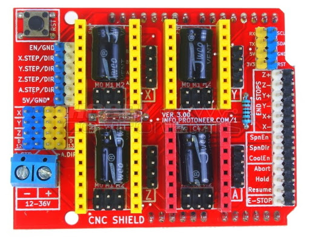Arduino CNC shields provide an Arduino microcontroller with the power necessary to drive stepper motors and run all the other functions that contribute to a CNC machine’s operation. Depending on the shield, this could include end stops, spindle speed control, and probing.In this week, we have used it to control the stepper motors in the vertical plotter. First of all we need to place the CNC shield on the top of Arduino as shown below.Make sure that, the pins of CNC shield is well connected in the right way.
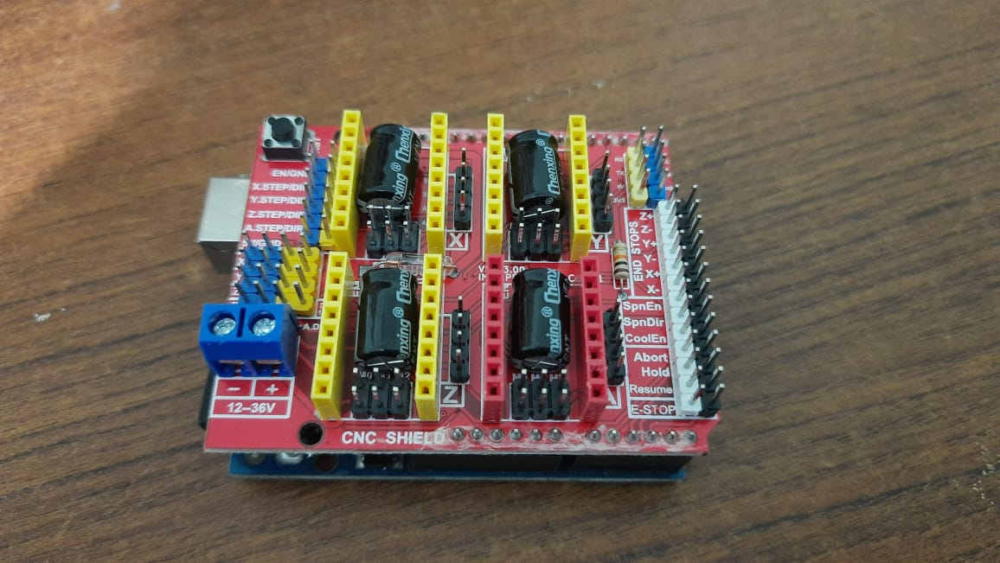Now connect the Stepper drivers in the CNC shield. As here we need only two motors, hence we need only 2 Stepper drivers in this case.Simillarly the steppers can also be connected in the output pins as shown.After connection, the 12V DC supply is connected to the CNC shield.The complete setup is shown as below:
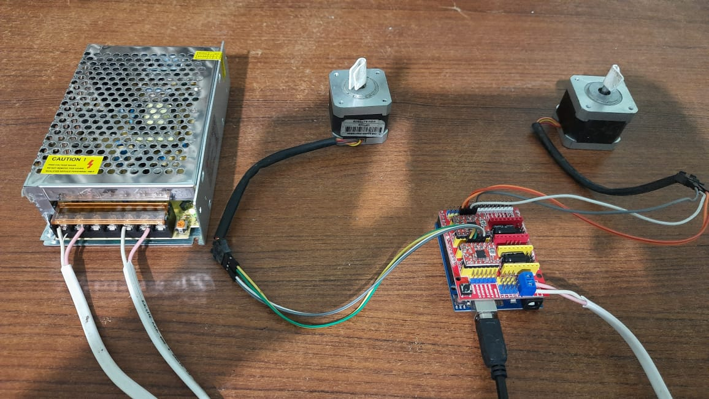Testing Motors using GRBL Controller:
After the successful connections, we tested the Motor rotations using GRBL Controller.To do that, first we need to download the GRBL Firmware here.Then follow the instructions below to upload it.
- Download the GRBL source code and unzip the download and we have a folder called "grbl-master".
- Launch the Arduino IDE and find the library location.usually it is "C:/user/documents/Arduino/libraries".Open the library location.
- Paste the "grbl" folder inside the extracted folder in the Arduino library folder.Now restart the Arduino IDE.
- Open the "GrblUpload" in the Arduino example. (Click the "file" down-down menu, navigate to "Examples->Grbl", and select "GrblUpload")
- Compile the code and upload GRBL to your Arduino. 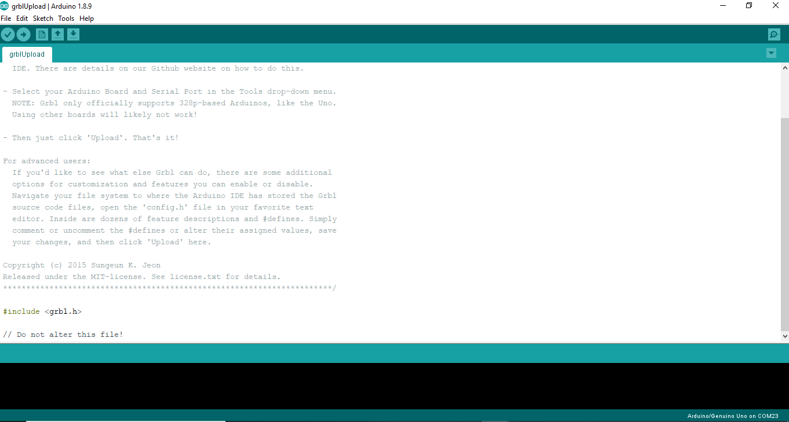
Testing with UGS Software:
Now, to test the Motor movements and all, there are many GRBL controllers available.Here we have used UGS(Universal G-code sender) controller software which can be downloaded from here.Now run the application using the .exe file available in "bin" folder.
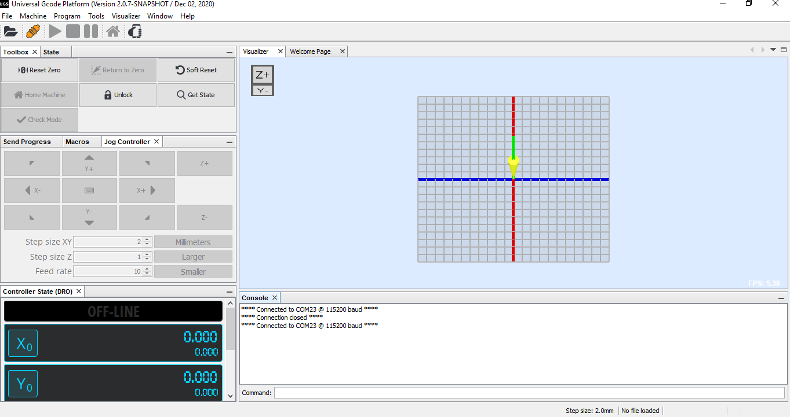After opening the software, we need to connect it giving baud rate as 115200 and COM PORT number at which Arduino is connected. After successful connection switch ON the Power supply, and click on the Navigation arrows in the Software. Now the servo motors should run.I have imported a sample gcode file of circle to test the motor which was susccessful as shown below:
Vertical Plotter Assembly and Testing
Now, after testing the Motors, we have connected the Servo motor to the CNC shield at "X-" pin of the shield connected to the signal pin of Servo.It is used to for controlling the pen height in the Polargraph.
Now we 3D printed a Gondola to hold the pen and the servo motor assembly.The readymade Gondola design is available here.Then it is 3d printed as shown.
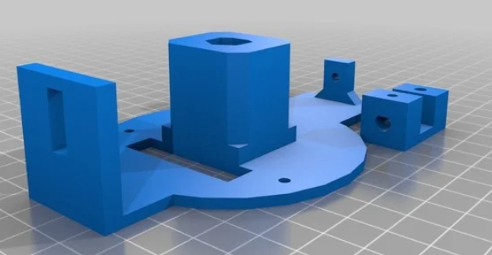 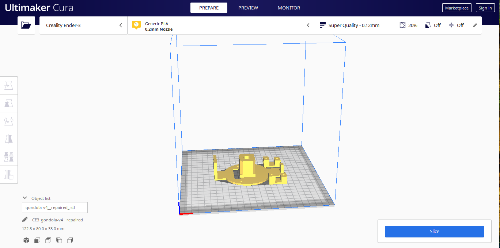First we did a Setup for vertical plotter as shown below. First we used a Nylon cable as the belt as shown.
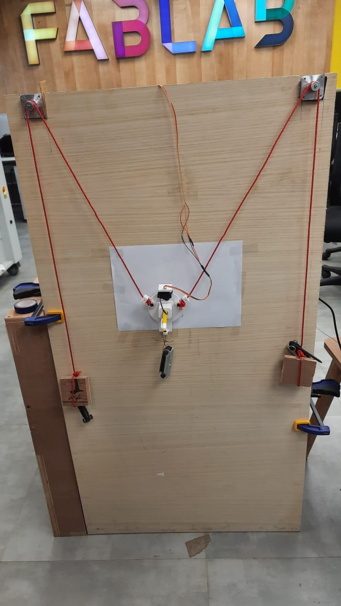 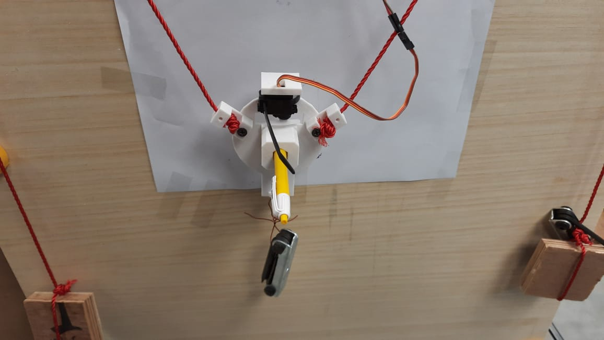Now we have to do the software setup to run the Plotter. For that we need to download the necessary files from the link here.Then we extracted the donwloaded folder, "arduino-source" folder have the firmware source. We copied the contents of the libraries into the arduino library folder.Simillarly we copied the "polargraph_server_a1" folder into the arduino project folder
After the completion of above process, We need to edit some of the parameters in the source code as shown below:
- In the "polargraph_server_a1.ino" file, we need to uncomment #define MICROCONTROLLER MC_UNO.
- Uncomment #define SERIAL_STEPPER_DRIVERS "polargraph_server_a1.ino" file
- define serial speed (57600 bps by default)
- servo pin (we used default PIN9)
Now in the configuration file following edits to be made.
- Step and direction pins for the controller needs to be defined.
#ifdef SERIAL_STEPPER_DRIVERS
#define MOTOR_A_ENABLE_PIN 8
#define MOTOR_A_STEP_PIN 2
#define MOTOR_A_DIR_PIN 5
#define MOTOR_B_ENABLE_PIN 8
#define MOTOR_B_STEP_PIN 3
#define MOTOR_B_DIR_PIN 6
AccelStepper motorA(1,MOTOR_A_STEP_PIN, MOTOR_A_DIR_PIN);
AccelStepper motorB(1,MOTOR_B_STEP_PIN, MOTOR_B_DIR_PIN);
#endif
Now we have to download the GUI application where we can do all the setup and drawing functions of the plotter. First we need to download the processing application from the link here.Now extract the downloaded file.
In the next step, we need to copy the contents from "processing-source" of Polargraph folder to the processing library folder.Now Run the processing application and Open the "polargraph" sketch from "sketchbook". Now run the code which will prompt a GUI as shown below.
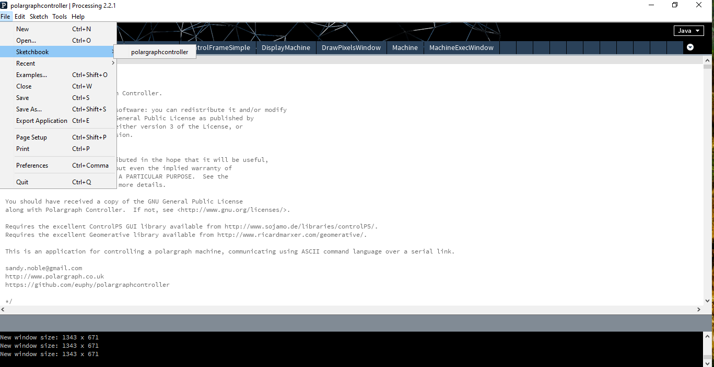 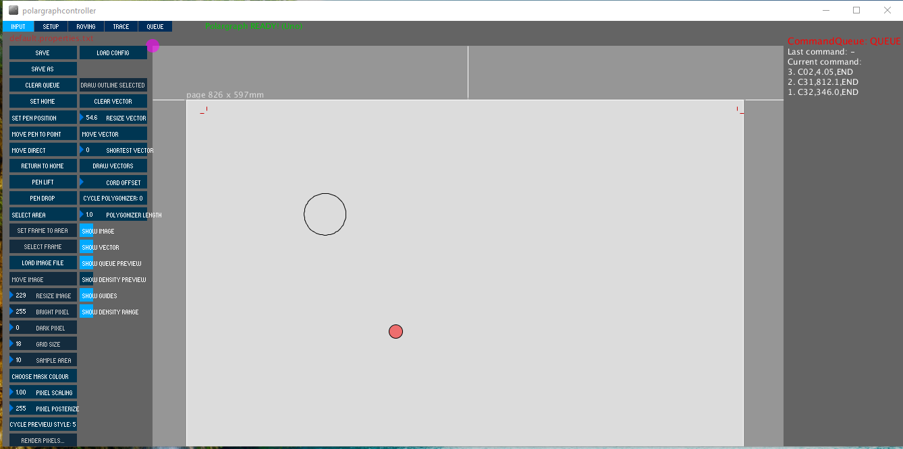In the GUI, we have to setup the parameters like Home, Machine width, Page width, Motor parameters etc.Then we have to import a SVG file into the machine and draw the vector.In the final step we have made several improvements in the design such as weight adjustement, replacing Belts in place of Nylon thread etc. The final video of the plotter is shown as below: